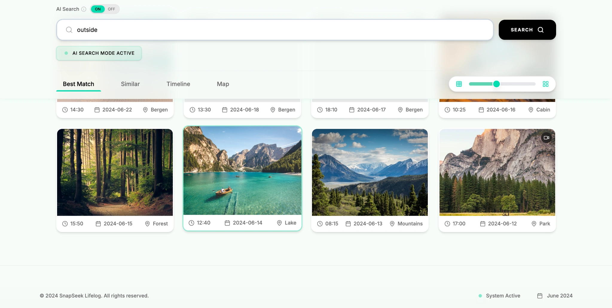

DESIGN · MENNESKER · TEKNOLOGI
Hei, jeg er
Marius.
Jeg utforsker hvordan digitale løsninger kan bli enklere å forstå og bruke.

Det skal være
lett å finne fram.
Jeg liker å forstå hvorfor noe føles vanskelig – og finne ut hva som kan gjøre det enklere.
Fra arbeidshverdagen på Haukeland til studier i interaksjonsdesign har jeg blitt opptatt av hvordan mennesker faktisk bruker systemene rundt seg.
Bli kjent med historien minArbeidet.
Et utvalg av prosjekter hvor innsikt, idéer og prototyper har blitt til noe konkret.
SnapSeek.
Brukerinnsikt · Redesign
Et avansert bildesøk, gjort mer forståelig for nye brukere gjennom innsikt, testing og design.
Utforsk prosjektet
Skredvett.
Interaksjonsdesign · Prototyping
Kart, vær og skredvarsler samlet for tryggere planlegging av turer i fjellet.
Utforsk prosjektet
Jobbportalen.
UX/UI · Konseptutvikling
Et konsept som kobler studenter med relevante småjobber. Kåret til beste prosjekt i MIX100.
Utforsk prosjektet